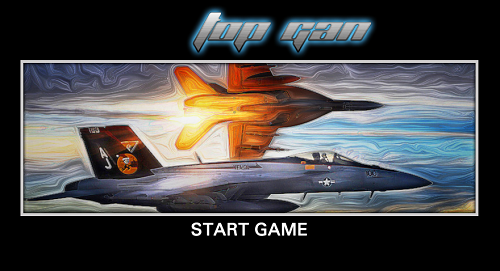

也紀念我們永遠的朋友 李士傑先生（Shih-Chieh Ilya Li）。
2012 NODE.JS KO 台灣黑客頌：48 小時挑戰開發者的極限
不論你是否理解程式語言，當一群人願意投注兩天的熱情，將一週中最寶貴的兩天假日，投入新程式碼的開發，他們的精神都值得尊敬！

新技術的自我突破 全世界的異地競逐
2012年11月10日早上八點，來自台灣各方程式開發者，帶著簡單的行李，聚集於中央研究院，參加「2012 Node.js Knockout 台灣黑客頌活動」。
這一次活動是台灣與紐約、舊金山、巴黎、波蘭等地，以程式開發者知名組織 Node.js 為核心，邀請全世界的程式開發者參加 Node.js Knockout 活動，共計有 417 組報名（每組上限 4 人）。其中，台灣也有在 Node.js 技術各領域專研者、KVM 虛擬化研究者、學生團體報名組隊參加。另外，台灣地區的黑客頌是由 Node.js 台灣社群、JSDC、中研院資創中心的自由軟體鑄造場及 MiCloud 共同主辦，推廣 Node.js 這項技術，並且在為期兩天之中，舉辦工作坊及講座。
黑客頌 (hackathon)，又叫做「駭客馬拉松」，是一群程式開發者，與程式編碼日夜纏鬥。必須在短時間內，從無到有地生能運作的程式。從想法激盪，到最後的成果展示，在有限時間創造無限創意就是黑客頌想要達成的目標。
- 全世界異地競逐，各國好手的成果，將會共同進行票選。
- 參賽者全程皆須以 Node.js 的技術進行開發。
- 台灣少數以 48 小時為單位的黑客頌。（一般都是一天制的比賽）
- 台灣第一個以技術開發社群為號召，所推行的黑客頌活動。
- 比賽進行時，同時舉辦研討會與講座，讓有興趣的參賽者能參與。
- 全世界的參賽者皆須將所有程式碼開源，成為世界知識的共同結晶。
「2012 Node.js Knockout 台灣黑客頌活動」負責人，亦為 JSDC 2012 的總召的戚務漢 (Caesar Chi) 表示：「這一次的活動，真的很難得，台灣之前從來沒有以社群為號召，辦過類似的活動。」對於網路程式開發技術來說，JavaScript 已經扮演著舉足輕重的角色，而 Node.js 做為一個高效能、易擴充的網站應用程式開發框架 (Web Application Framework)，推廣給更多的開發者，讓大家了解這項技術的好處，是十分有意義的！
此次活動的講座，邀請到社群網站 Plurk（噗浪）的創辦人雲惟彬 (Alvin Woon)，分享他使用 Node.js 進行開發的經驗，主題為「Building Mapchats with Firebase」。他示範了 Node.js 加上 firebase 即時數據同步的應用，只需要20行程式碼即可寫出一個即時聊天室。Alvin 秀出了程式碼，也將他今年在 Yahoo! 的 Open Hack Day 黑客頌的成果－ Map Chat 展示出來，Map Chat 運用的正是 Node.js，並且與 Google Map 做結合，讓使用者們能在 Google Map 上聊天。而在他講解的過程當中，也不時提到，「這個東西真的很厲害！」
對於這次的參賽者來說，也是十分特別的經驗。大多數的程式開發者都表示，平時有碰過 Node.js，不過由於平時工作之中，沒有太多用到的機會。所以次需要完全使用 Node.js 的技術，開發完整的程式，對於大多數的參賽者來說，是很新鮮的經驗。比賽正式開始之前，有好幾位參賽者也談到，透過這一次的黑客頌，正好能做為自我挑戰與新突破的機會！
成果展示
第一名：Fighter on Google Map
團隊名稱：Top Gan

當黑客頌開始進行之後，Top Gan 團隊在第一天接受訪問時，就已經把成品的藍圖勾勒出來，想要打造一個戰鬥機的多人即時對戰遊戲，並且能夠在 Google Map 上的衛星圖上自由的追逐。由於與 Google Map 的整合，使得遊戲背景更逼真！
當談到這次開發時，他們談到，除了必須使用規定的 Node.js 之外，也使用了 socket.io 這個套件，socket.io 是一項跨平台即時溝通的套件，專用於即時互動的功能。對於多人即時對戰這項功能的開發當中，相當重要。
並列第二名：Beauty Book
團隊名稱：Never Say Free

Never Say Free 的概念相當易懂，他們做了一個「正妹牆」的網路社群，採用 Facebook 的登入機制，做為會員登入的機制，而社群的運作，在於所有使用者的推薦漂亮女生的 Facebook 帳號，並舉行投票。當推薦的女生受大家喜愛時，推薦者即可獲得積分，當積分夠多時，就可以使用積分值，瀏覽其他想認識的漂亮女生的 Facebook 帳號。
並列第二名：Capturer
團隊名稱：hahahaha
因為 hahahaha 團隊中，有人對於「使用者介面」的體驗研究相當有感觸，所以決定開發一個可以追蹤使用者瀏覽網頁時的游標軌跡，並支援同步在監控端播放。
面對第一次認真以 Node.js 做為開發工具的 hahahaha 團隊表示，利用 socket.io 對於多端同步的資料處理上，有相當大的幫助。
最佳完成度獎：Dlurk Chat
團隊名稱：isDMD
isDMD 的團隊組成相當特殊，是由三位數位媒體設計領域的成員，與一位程式開發者組成。他們做了一個橫向卷軸聊天室，不過聊天室的場景切換、小互動以及圖案的呈現，都相當的完整，是一組美術能力非常強的隊伍與成果。
最高人氣獎：▁▂▃▄▅▆▇█ Node.Way
團隊名稱：▁▂▃▄▅▆▇█ Node.Way
Node.Way 開發的是一款回合制的網頁遊戲，透過玩家們選擇各種技能，進行攻防戰，移動方式則是採格子狀的移動步數限制，並採用 2.5D 的視角，在短短的兩天之中，提出這麼多功能的遊戲架構，讓大家都相當驚訝，在成果展示時，仍不斷地修正與嘗試，無疑的表達了開發者的熱忱，感動許多在場的人，也因此獲得了最高人氣獎。
最佳創意獎：Tainan style
團隊名稱：Tainan style
Tainan Style 做的是朋友打賭的社群網站，除了接串 Facebook 的登入機制以外；也串接 Justin.tv 的線上即時播放功能，提供朋友們在打賭時，能夠即時的轉播。再加上籌碼的機制，是個很有創意的作品。
評審講評：評斷的標準不外乎服務力、潛力、商業價值與技術力
「2012 Node.js Knockout 台灣黑客頌活動」的評審分別由iT邦幫忙產品經理黃柏諺 (Brecht)、業界知名的馮旭平（費大公；Fillano）、MiCloud 發起人趙元瀚 (Jeese) 以及 TMI 台灣創意工場創辦人首席執行官王仁中 (Lucas) 擔任。
Jeese 表示，總括來說，一個好的作品，不外乎就是提供優良的服務、具有發展潛力、擁有商業價值以及強大的技術能力。而這次未得獎的作品，幾乎都是其中的幾項關鍵，可以有更好的空間。像是未得名的 Node Monitor Your Database，其實是個很棒的概念，不過還缺了一些完整度，以致於服務性未能突顯出來，相當可惜。
另外，評審也點出 Mr. TVBs 團隊所開發出的 Servent-Any，雖然沒得獎；卻是個有趣的「女僕人」服務，若不要做成網站，而是做成 Plug-in，必定會成為更加吸引人的作品。
最後，評審也勉勵各位參賽者，能夠繼續開發更多的作品。
後記：Node.js 之應用
Node.js 做為一個網站應用程式開發框架，從此次黑客頌的作品當中，就能了解到它的其中一個特色，搭配上 socket.io 的應用，在「即時系統 (Real-Time) 」的開發上具有優勢。另外，Node.js 有著非阻塞的特性，並能承受高連線數量，高性能低耗能的優秀性能表現，雖然這次的黑客頌，不太有機會嘗試到高連線數量的挑戰，不過不可否認 Node.js 在這方面的表現可圈可點。未來，如果想要開發新的程式，也可以嘗試 Node.js。
專欄總覽


E-Mail：contact@openfoundry.org Address：台北市南港區研究院路2段128號 中央研究院資訊科學研究所 . 隱私權條款. 使用條款